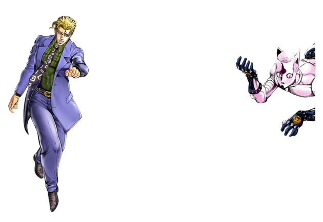

Задание:
Подключить к своему сайту JavaScript
2. Решить через JavaScript пример: a = 5; b = 14; c = (a+b) * (b+a) и вывести в консоль
3. С помощью JavaScript вывести на страницу любой текст
QQ
It's JS
a = 5; b = 14; c = (a+b) * (b+a);

A short-range power type stand with a light pink body. Flat triangular horns shaped like cat ears hang on both sides of the head,[9] The
have crimson sclera and white oval pupils. In the original, the eyes were white after the first appearance, but in the TVA, the eyes remain red, perhaps to create a sense of fear. It has no nose and has thin lips that are always closed. She looks scary at first glance because her eyes are always brightly open, but with that face, she shows various postures that make her look like a ballerina.
He is wearing dark- colored leather gloves that go up to his forearms with pierced thumbs, a belt reminiscent of a garter belt around his waist, and shoes
that come up to his ankles. Skeleton-patterned metal buttons with cat ears are decorated in various sizes on the
back of the leather glove, belt buckle, shoulder, both ankles, and the tip of the foot.
It only has no nose, but it is a face close to a person, and a great expressionless
expression stands out. Also, it has a pair of pointed ears on the top of the head, giving it the
impression of a cat. Also, in the work , it is also linked with cat grass, which is a real cat, and the ey-
es of the killer queen are described as cat's eyes in the opening of the second part of the 4th anime.
As such, the overall design is reminiscent of cats, so in secondary creations, it is often associated with cats.
Originally, there was a metal plate with the same cat ear skull pattern underneath the belt buckle to cover the crotch, but
after the completion of part 4, the design was omitted to reveal the groin area. A design that is very conscious of cats
in appearance and decoration. It is presumed that he was conscious of a line in the lyrics of the song Killer Queen,
"Playful as a pussy cat ".

{kind=link}